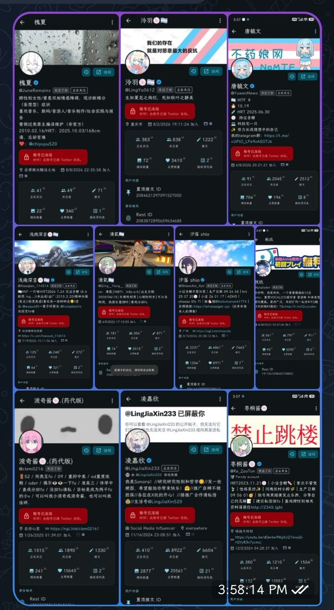
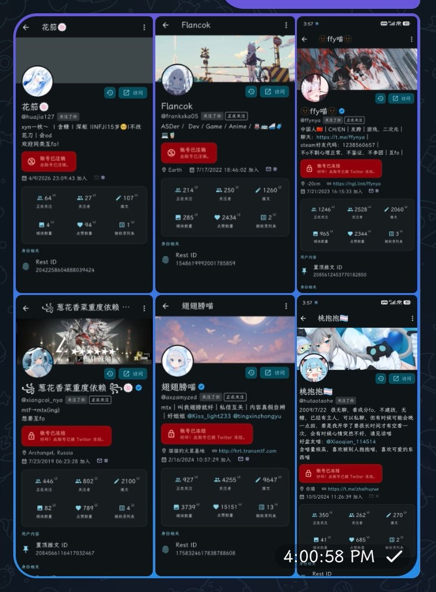

@wuyuandev HII @elonmusk @X @Support @nikitabier
WE WILL REPORT THIS TO
https://t.co/tCCwPZknNx https://t.co/emtLPcrkpU https://t.co/KQZIozyAdu https://t.co/OI1EDAB0db https://t.co/ATN4Ak2O4L https://t.co/w0LIIIGZzd https://t.co/mPhVrqUrBx https://t.co/WIsaKW4FUG
WE WILL REPORT THIS TO
https://t.co/tCCwPZknNx https://t.co/emtLPcrkpU https://t.co/KQZIozyAdu https://t.co/OI1EDAB0db https://t.co/ATN4Ak2O4L https://t.co/w0LIIIGZzd https://t.co/mPhVrqUrBx https://t.co/WIsaKW4FUG

